Identity study / 01
Breakspider asset sheet
Off-white ink, crooked letters, a web that holds together until it doesn't.
VECTOR / MOTION READY
01 / Independent layers
01 — BREAK

02 — SPIDER

03 — Left web

04 — Right web

05 — Torn silk

06 — Spider

System notes
Same ink and stroke language in every layer.
Each part has transparent, cropped bounds for motion.
02 / One web, three key poses
The outer anchors, twelve spokes, and four capture rings correspond in every pose. The center bridge stretches under load, then splits into paired silk ends.
07 — Pre-load · lightly tensioned

08 — Loaded · sagged, still connected

09 — Broken · overloaded final

03 / Assembly check
10 — Final logo · one self-contained SVG
11 — Same logo · six separate files
The original concept remains at logo-concept-draft.png. These files redraw the system; they do not embed the reference image. The two final logo SVGs are self-contained. The assembly above uses the six separate SVG files.